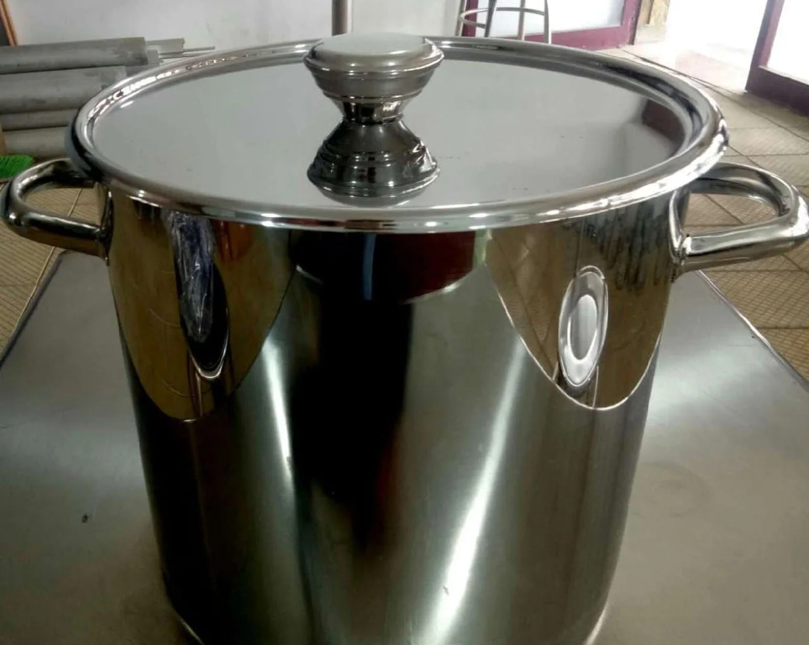
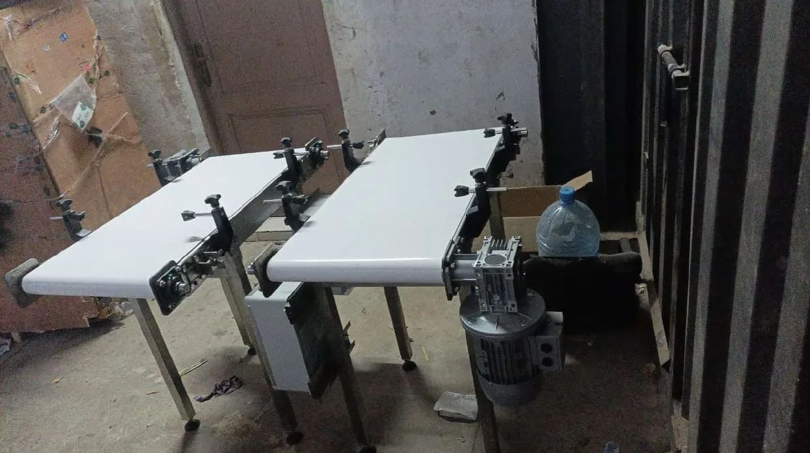

Stainless Steel Liquid Storage Tote (IBC)
Designed to be stacked into shipping containers; used for storage and transportation of hazardous and non-hazardous liquid products.
Request technical quotation ↗30 equipment types across five families. Configurations are confirmed per project.

Liquid IBC totes, cylindrical & vertical vessels, eccentric-bottom tanks, powder containment, and FRP chemical storage.
Designed to be stacked into shipping containers; used for storage and transportation of hazardous and non-hazardous liquid products.
Request technical quotation ↗Built for high corrosion resistance; suitable for storing and transporting thick liquid products.
Request technical quotation ↗Used for maneuverability and efficiency when packaging food, medicine, and chemical liquids.
Request technical quotation ↗Designed with an eccentric bottom specifically making it easy to discharge and clean thick liquids.
Request technical quotation ↗Heavy-duty containment suited specifically for safe packaging and transportation of chemical powders, dry medicines, and specialized dry components.
Request technical quotation ↗Engineered for bulk storage of dry materials used in manufacturing, including food ingredients, dry chemicals, and bulk minerals.
Request technical quotation ↗Built from Fiberglass Reinforced Plastic; serves as a primary solution for handling acids, alkalis, and corrosive chemicals.
Request technical quotation ↗Applied in cosmetic, pharmaceutical, food, and chemical machinery sectors to provide complete packaging and storage solutions.
Request technical quotation ↗
Liquid mixing tanks, electric heating jacketed units, agitator vessels, pneumatic mixers, and 100L–2000L chemical mixers.
Primary industrial mixing tank for heating and blending viscous food products such as jams, syrups, and thick sauces.
Request technical quotation ↗1000L capacity equipped with a built-in electric heating jacket for precise thermal processing.
Request technical quotation ↗Engineered and utilized heavily in industrial applications requiring continuous, efficient, and thorough mechanical mixing.
Request technical quotation ↗Equipped with a specialized pneumatic mixing function designed for processing and combining various industrial liquids safely.
Request technical quotation ↗Versatile mixing units deployed across food, beverage, pharmacy, and chemical manufacturing sectors.
Request technical quotation ↗General-purpose stainless mixing tank used for chemical liquid mixing and pharmaceutical manufacturing.
Request technical quotation ↗
Sanitary mixers, steam-jacketed kettles, planetary stir-fry cookers, triple-walled cheese vats, and hygiene/cream lines.
Utilized for heating and blending food products such as jams and syrups in a hygienic controlled environment.
Request technical quotation ↗Functions as a heavy-duty industrial frying pot, mixing kettle, and cooking tank for large-scale preparation.
Request technical quotation ↗Engineered for high-performance mixing and cooking of highly viscous food pastes.
Request technical quotation ↗Triple-walled, insulated vat featuring an overhead stirring machine optimized for commercial cheese production.
Request technical quotation ↗Applied specifically for manufacturing liquid hygiene products including shampoo, liquid soap, gels, and shower gel.
Request technical quotation ↗Engineered to produce high-volume liquid soap detergents, pharmaceutical ointments, and smooth cosmetic creams.
Request technical quotation ↗
Precision screw feeders, horizontal/inclined screw conveyors, tubular & U-trough builds, and shaftless sludge designs.
Designed for precision and control; placed at the start of a process with flood-loaded inlets to modulate flow rate.
Request technical quotation ↗Built for transportation and transfer; control-fed by upstream equipment to move materials horizontally, vertically, or at an incline.
Request technical quotation ↗Enclosed cylindrical tubes for dust-free clean environments, or open U-trough designs for easy monitoring and maintenance.
Request technical quotation ↗Configurations without center shafts for handling viscous sludge, or multiple parallel screws to prevent material bridging.
Request technical quotation ↗Stainless-framed belt conveyor lines with geared drives and pneumatic sorting attachments fabricated in-house.
Request technical quotation ↗
Automatic liquid feed systems, industrial water & feed pumps, dual-shaft shredders, crushers, and recycling lines.
Automated delivery systems with customized stainless steel varied-spacing feeding troughs for liquid feed distribution.
Request technical quotation ↗Heavy-duty feed supply pumps and compact vertical in-line water pumps integrated within pipeline networks.
Request technical quotation ↗Heavy-duty crushers designed for reducing PET bottles, PVC/PE pipes, and industrial tires into granules.
Request technical quotation ↗Robust dual-shaft shredders tailored for processing scrap materials and electronic circuit boards.
Request technical quotation ↗Integrated production lines engineered for continuous feeding, crushing, washing, and processing of bulk waste plastics.
Request technical quotation ↗